How It Works
Lead Ad form
Facebook Lead Ad
Webhook
HMAC-SHA256 signed
& enqueues
Signature + idempotency check
fetch
Full lead data retrieved
created
Assigned to sales team
Screenshots
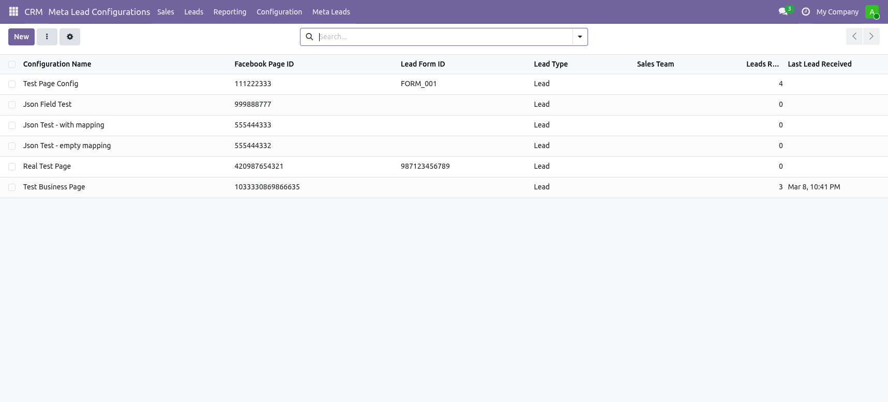
Meta Lead Configurations — manage multiple Facebook Pages & forms from one place
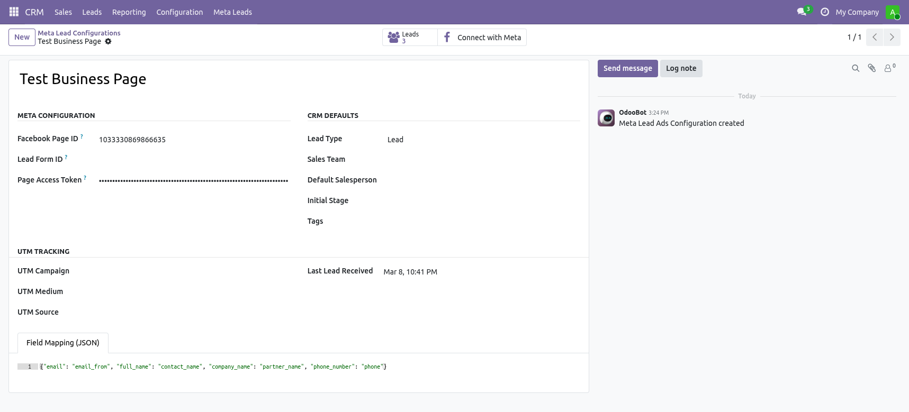
Configuration form — set Page ID, Access Token, Sales Team, Stage, and UTM parameters

"Connect with Meta" — one-click OAuth flow to authorise your Facebook Page
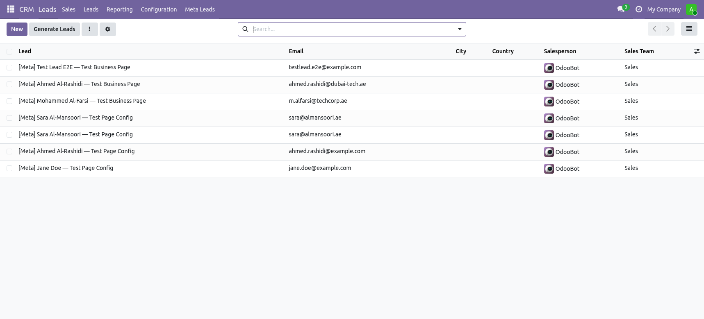
CRM Leads — incoming Meta leads appear instantly, prefixed with [Meta] for easy filtering
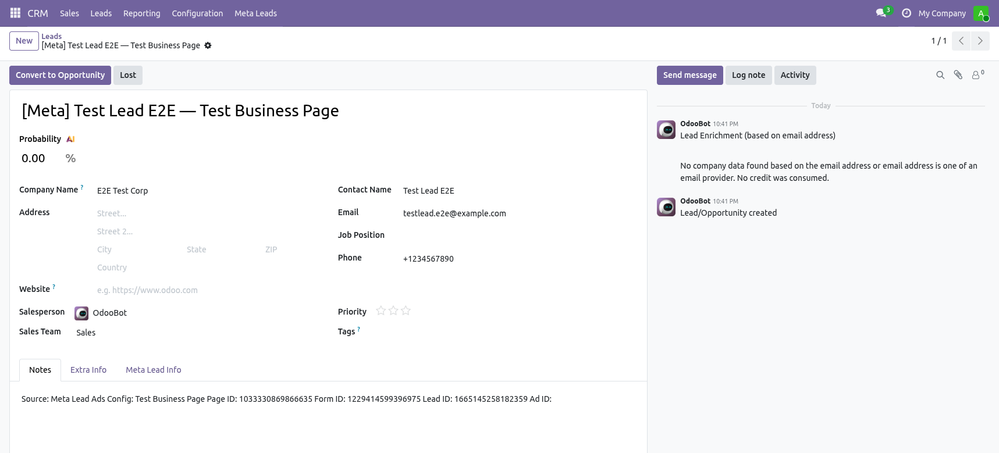
Lead form — all Meta form fields mapped automatically to the correct CRM fields
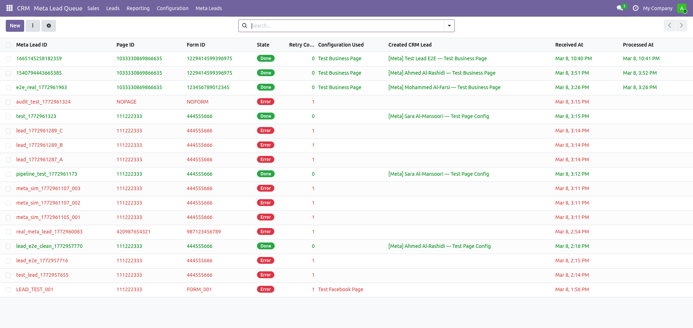
Webhook Queue — every incoming event tracked with status and retry support
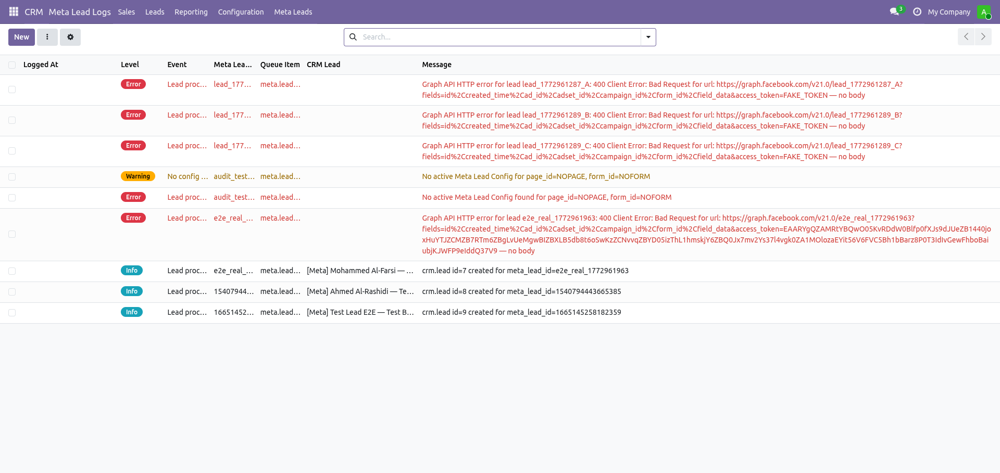
Audit Log — immutable record of every webhook event: success, error, or no-config
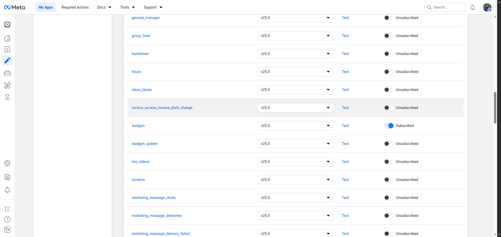
Meta Webhooks Dashboard — leadgen field shown as Subscribed on the Page product
Key Features
Real-Time Webhook Delivery
Meta pushes lead events to your Odoo server within seconds of form submission — no polling, no cron imports, no lag.
HMAC-SHA256 Verification
Every incoming webhook is cryptographically verified against your App Secret. Forged or tampered requests are rejected with 403.
Zero Duplicate Leads
Database-enforced uniqueness on Meta's leadgen_id guarantees each lead is processed exactly once — even if Meta retries the webhook.
Multi-Page & Multi-Form
Create one configuration per Facebook Page, or go granular with per-form configs. Each configuration routes to its own sales team, pipeline stage, and salesperson.
Custom Field Mapping
Map any Meta form field — including custom questions — to any crm.lead field using a simple JSON editor. Unmapped fields are preserved in the lead description.
Full Audit Trail
Every webhook event is logged with status (done / error / no-config), timestamp, and error details. Nothing is silently lost.
Auto-Retry Queue
Failed events (e.g. temporary API downtime) are automatically retried on the next cron cycle. No manual intervention needed.
Automatic Contact Creation
The module matches incoming email/phone to existing Odoo contacts before creating new ones — keeping your partner database clean.
UTM Attribution
Assign Campaign, Medium, and Source per configuration so every lead is tied to the correct marketing effort for revenue reporting.
Intelligent Field Mapping
Standard Meta form fields are mapped automatically — no setup required:
| Meta Form Field | Odoo CRM Field |
|---|---|
full_name | Contact Name |
first_name + last_name | Contact Name (merged) |
email / work_email | |
phone_number | Phone |
mobile_number | Mobile |
company_name | Company |
job_title | Job Title |
city / zip_code | City / Zip |
country / state | Country / State |
website_url | Website |
Custom questions? Add a JSON mapping in the Configuration form:
{
"budget_range": "description",
"product_interest": "name",
"preferred_callback_time": "description",
"CUSTOM_Q_referral_source": "description"
}
Any Meta field not in the map is automatically appended to the CRM lead's Description — no data is ever lost.
Configuration Guide
| Key | Value |
|---|---|
meta_leads.app_id | Your Meta App ID |
meta_leads.app_secret | Your Meta App Secret (kept private) |
meta_leads.verify_token | Any secret string you choose |
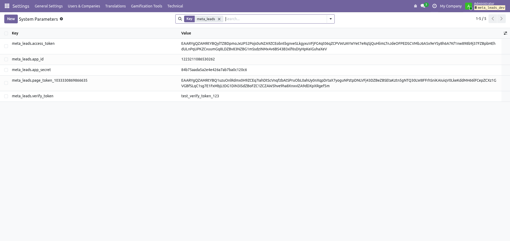
System Parameters — the three meta_leads.* keys configured in Odoo Technical Settings
Your Meta App ID and App Secret are found in the Meta Developer Dashboard under App Settings → Basic:
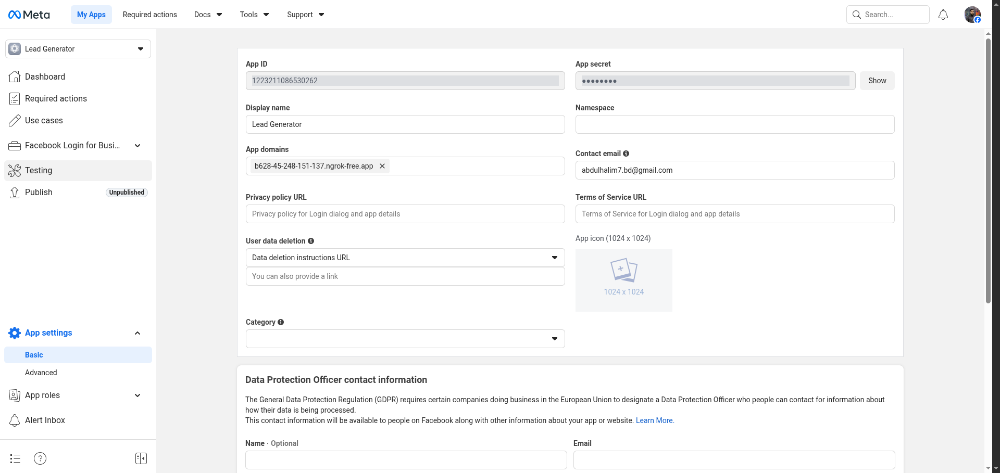
Meta App Settings — App ID and masked App Secret on the Basic settings page
https://yoursite.com/meta/leads/webhookand the Verify Token to match what you set in step 2. Subscribe to the
leadgen field.
Meta Webhooks — the leadgen field showing as Subscribed under the Page product
https://yoursite.com/meta/oauth/callback
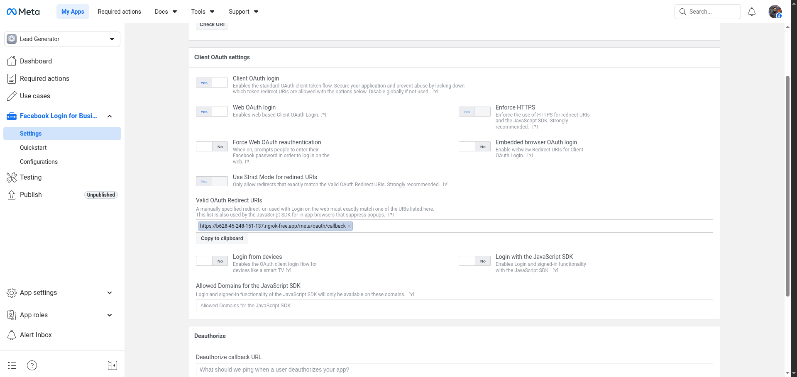
Facebook Login for Business → Settings — OAuth callback URL registered in Valid OAuth Redirect URIs
- Enter your Facebook Page ID and Page Access Token
- Optionally set a Lead Form ID to restrict to one form
- Assign a Sales Team, Salesperson, and Stage
- Add UTM Campaign / Medium / Source for attribution
Configuration form — one record per Facebook Page (or per form for granular routing)
Use the Connect with Meta button to authorise access via OAuth — no need to manually paste a long-lived token.
One-click OAuth — click "Connect with Meta" to authorise your Facebook Page
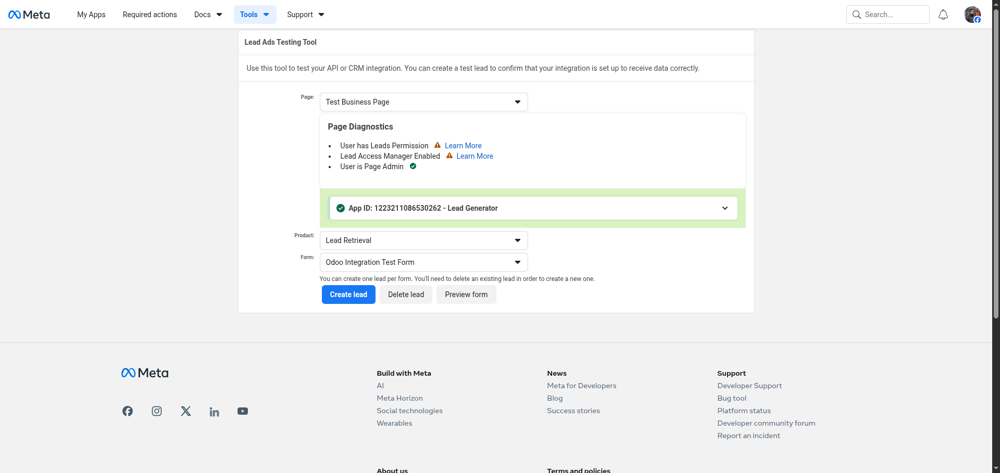
Meta Lead Ads Testing Tool — select your Page and Form then click "Create lead" to send a test event
Check the result in Odoo CRM — leads arrive prefixed with [Meta]:
CRM Leads list — Meta leads appear instantly with all form fields mapped
CRM Lead form — name, email, phone, company and all custom fields populated automatically
Monitoring & Audit
📥 Meta Leads → Queue
See every incoming webhook event with state (pending / done / error), form ID, and error details.
Webhook Queue — real-time event tracking with retry state
📋 Meta Leads → Audit Log
Complete immutable history of every processing attempt — success, failure, or no-config.
Audit Log — full history of every webhook received
🔢 Leads Counter
Each configuration shows a live count of leads received and a "Last Lead Received" timestamp.
Config list — per-page lead counts and last-received timestamp at a glance
Compatibility & Requirements
base, crm, mail, web
- A Meta (Facebook) Developer account with a Business App
- A publicly accessible Odoo server with a valid SSL certificate (HTTPS)
- Meta Graph API v21.0+ (no SDK install required)
ngrok http 8069) to create a temporary public tunnel.
Frequently Asked Questions
Q: Does this work with Instagram Lead Ads?
Instagram Lead Ads use the same Meta webhook infrastructure as Facebook — if your Instagram account is connected to a Facebook Page, the leadgen webhook event is routed through the same Page subscription. However, this has not been independently tested and is not officially supported in this release. If you need confirmed Instagram support, please contact us before purchasing.
Q: Can I use one Odoo for multiple Facebook Pages?
Yes. Create one Configuration per Page (and optionally per Form). Each has its own sales team, pipeline stage, and field mapping.
Q: What happens if the same person submits the form twice?
Each Meta lead has a unique leadgen_id. A database UNIQUE constraint ensures every lead is processed exactly once — duplicates are silently skipped.
Q: What if my server is temporarily down?
Meta retries failed webhooks. When your server comes back online, the module automatically processes queued items. Events are never permanently lost.
Q: My Meta form has custom questions — will they be captured?
Yes. Custom questions not in the default map are appended to the CRM lead Description. You can also define explicit JSON mappings to route them to specific Odoo fields.
Q: Is the Page Access Token secure?
Page Access Tokens are stored in an Odoo password field (displayed as ••••) and are only used server-side to call the Meta Graph API. They are never exposed in the UI or logs.
Contact & Support
For support, customisation, or any enquiries — we're here to help.
🇧🇩 Bangladesh
8th Floor, 2 Bir Uttam AK Khandakar Road,
Mohakhali C/A, Dhaka 1212
+880 1719-304086
🇺🇸 USA
7426 Alban Station Blvd,
Suite A101, Springfield, VA 22150
+1 201 534 7200